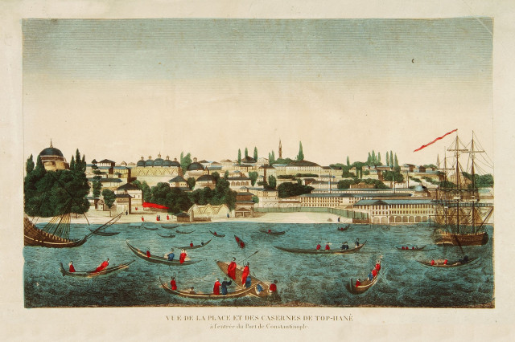
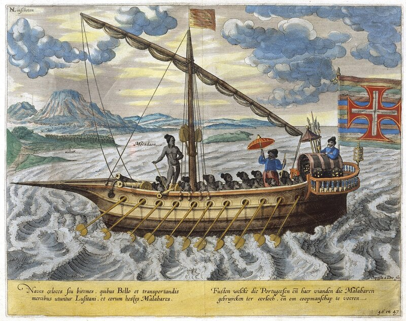

Корабли Османского флота
Продолжим знакомиться с донесением капудана Ga'fer Aga Великому визирю о подготовке эскадры снабжения войск султана в Египте.
После приведенных уже выше типов кораблей, входящих в эскадру, идут названия каик и калита. С ними все более или менее ясно.
 |
На приведенной гравюре вся водная поверхность Босфора заполнена каиками. В словаре Брокгауза и Ефрона написано по этому поводу:
«Каики – длинные, редко парусные лодки, столь же характерные для Константинополя и Золотого рога, как гондолы для Венеции, обыкновенно с 1, 2 или 3 парами весел. Каики легки и грациозны, но не особенно устойчивы; часто раскрашены масляными красками. У высших турецких сановников в каиках. обыкновенно 7 пар уключин и рулевой, реис; 10 уключин и балдахин на раззолоченном каике — привилегия султана.»
Но были и другие каики (кстати, ударение в этом слове приходится на И). Как вид канонерских лодок. Огюстен Жаль в "Морском словаре" обозначает разницу между этими двумя видами каик, приводя для них отдельные термины: caïc и caïque. Если caïc у него - небольшой пиратский корабль, скорее шлюпка, который, как правило, использовали «русские пираты» на Черном море и в Босфоре, т.е. он имеет в виду чайку запорожских казаков , то caïque – вид небольшого военного корабля, аналогичного канонерской лодке. Она несет одно большое орудие на носу, имеет при небольшом водоизмещении и осадке прочный набор корпуса.
Калита – kalita, kalyata – вероятно соответствует итальянским галиотам galiotta или, как их называли еще, фустам ( fusta). Этот корабль очень любили пираты за его скорость, способность действовать в необычных или стесненных обстоятельствах, в частности, на мелководных якорных стоянках, за возможность укрыть его в прибрежных пещерах, откуда пираты предпринимали неожиданные атаки на свои жертвы. Имели эти корабли от 16 до 24 банок, на каждом весле находилось до 2 гребцов. Есть изображение португальской фусты, оно может не совсем к месту, но уж больно гравюра (Jan Huygen van Linschoten) красивая.

В тот период пушки полевой и осадной артиллерии доставлялись морем на специальных кораблях - top gemisi. Начиная с 1488 года в составе османского флота постоянно находилось до десятка таких кораблей, выходящие из строя заменялись вновь построенными или отремонтированными. Эти корабли были способны перевозить в случае необходимости в тот или иной пункт побережья за один раз несколько сотен орудий. Специальные суда делали и для доставки боеприпасов. На каждом таком судне можно было перевезти до 2000 чугунных ядер. (Gabor Agoston. Guns for the Sultan: Military power and the weapons industry in the Ottoman Empire. Cambridge University Press, 2005, с.52). Тяжелые каменные ядра перевозили на taş gemisi («каменных» судах). Особое внимание уделялось доставке пороха. Для этого изготавливали так называемые «закрытые» (örtülü) суда – понятно, что по морю порох даже в бочках на открытой палубе перевозить нельзя. Типичным явлением была также мобилизация частных купеческих чаек (şaykas; запорожские чайки произошли от этого слова, а не от крикливых днепровских пернатых) для доставки в нужный порт пушек и боеприпасов к ним.
Также капудан получил приказ набрать из молодых янычар Анатолии и Румелии 2000 человек, вооруженных аркебузами с необходимым запасом пуль и пороха для размещения их на кораблях. Далее в донесении приводится указание о создании необходимого запаса подков для лошадей, гвоздей, обуви, одежды и провианта, а также необходимого числа ремесленников для ремонта и обслуживания всей этой амуниции и оружия.
Это небольшое отступление, которое мы сделали в нескольких предыдущих постах, поможет нам в дальнейшем оценить возможности, которыми располагали войска султана при осаде Родоса.